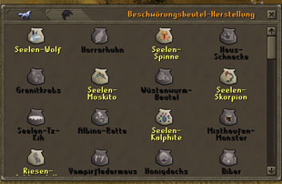
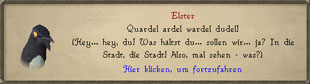
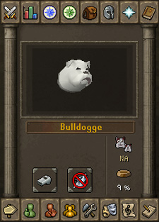

")
Beschwörung - Grundlagen
Einführung | Beutel durchwirken | Vertraute beschwören | Zauberrollen und Spezialaktionen
Vertraute im Kampf | Haustiere
Vertraute im Kampf | Haustiere
Einführung

Die Druiden in Taverley und die Oger-Schamanen aus Gu'Tanoth beschwören schon seit Jahrhunderten Vertraute, die sie bei verschiedenen Aufgaben unterstützen. Diese beiden Gruppen beschwören natürlich ganz unterschiedliche Vertraute, da die Druiden ja eher friedlich und die Oger eher etwas 'geschäftsmäßiger' aufgelegt sind. Was könnte ein Druide wohl mit einem Runit-Minotaurus anfangen? Und ein Oger mit einem Einhorn-Hengst?
Da diesen Gruppen jetzt aufgefallen ist, dass diese Fertigkeit den Abenteurern auf RuneScape sehr nützlich sein könnte, teilen sie euch die Geheimnisse dieser Kunst jetzt mit, sodass ihr ihre ungewöhnlichen Vorteile genießen könnt, wenn ihr Beschwörung trainiert.
Bei der Beschwörung wird eine bestimmte Art von Beutel mit der Essenz eines Wesens aus einer fremden Dimension durchwirkt. Wenn der Beschwörungsbeutel geöffnet wird, aktiviert sich kurzzeitig ein Portal, das dieses Wesen nach RuneScape zieht, wo es an seinen Beschwörer gebunden wird und ihn für eine bestimmte Zeit unterstützen muss, bevor sich das Portal wieder schließt und es in seine Heimatdimension zurückgezogen wird.
Beschwörung ist eine Fertigkeit bestehend aus drei Stadien. D. h. es gibt drei Haupttätigkeitsfelder im Zusammenhang mit Beschwörung und den Vertrauten. Hier die Stadien:
- Beutel durchwirken
Dabei werden spezielle Zutaten mit einem aktiven Beschwörungs-Obelisken benutzt, um Beschwörungsbeutel herzustellen, die die Essenz des Vertrauten beinhalten.
- Vertraute beschwören
Durch Öffnen des Beutels wird der Vertraute beschworen, woraufhin er euch auf RuneScape folgt und unterstützt.
- Benutzung von Zauberrollen
Beutel können zu Beschwörungs-Zauberrollen verwandelt werden. Jeder Vertraute besitzt eine Spezialaktion, die nur ausgeführt werden kann, wenn man die richtige Zauberrolle benutzt.
Beutel durchwirken

Um die benötigten Zutaten einzusehen, müsst ihr nur mit eurer Maus über einen Beutel in diesem Spielfenster fahren. Wie bei vielen anderen Fertigkeiten könnt ihr einen Beutel auch rechtsklicken, um mehrere auf einmal herzustellen. Ihr könnt auch eine Liste der Zutaten im Chatfenster erhalten, wenn ihr auf den Beutel rechtsklickt und 'Auflisten' auswählt.
Vertraute beschwören
| Um einen Vertrauten zu beschwören, für den ihr einen Beutel besitzt, müsst ihr diesen nur rechtsklicken und 'Beschwören' auswählen. Euer Vertrauter wird sich neben euch materialisieren. Anmerkung: Ihr könnt immer nur einen Begleiter gleichzeitig haben (also entweder einen Vertrauten oder ein Haustier). Außerdem gibt es einige wenige Orte, an denen Beschwörung nicht möglich ist, zum Beispiel in der Nähe eines aktiven Obelisken. |
Um euren Vertrauten und seine Spezialaktionen im Auge zu behalten (indem ihr eine Beschwörungs-Zauberrolle benutzt), rechtslickt auf das Beschwörungssymbol neben der Minikarte. Das öffnet eine Liste aller euch zur Verfügung stehenden Optionen. Die erste Option löst die Spezialaktion des Vertrauten aus. Die anderen Optionen sind:
- Vertrauten-Details
- Vertrauten rufen
- Jetzt wegschicken
- Lasttier entladen
- Vertrauten erneuern

| Dieses Menü zeigt euch nützliche Informationen, die ihr wissen müsst, um alles aus eurem Vertrauten herauszuholen. Der Balken am oberen Rand des Fensters ist der Spezialaktions-Balken. Er zeigt an, wie viel Energie ihr noch verfügbar habt, um Zauberrollen zu benutzen, durch die euer Vertraute seine Spezialaktion verwendet. Dieser Balken lädt sich mit der Zeit wieder auf. Weiter unten erhaltet ihr mehr Informationen zu Spezialaktionen und Zauberrollen. Unter diesem Balken seht ihr eine Schaltfläche, mit der ihr die Spezialaktion eures Vertrauten aktivieren könnt, sofern sich die richtige Zauberrolle in eurem Inventar oder einer aufgeladenen Kopfbedeckung befindet. Wenn ihr mit der Maus über dieses Symbol fahrt, seht ihr eine Erklärung der Aktion und wie viel Energie sie verbrauchen wird. Gegenüber dieses Symbols ist ein weiteres, mit dem ihr eurem Vertrauten befehlen könnt, ein bestimmtes Ziel anzugreifen. Unter dem Bild eures Vertrauten seht ihr Symbole, die eure momentanen Energiepunkte anzeigen (hier 49/50) und wie viele Minuten euer Vertrauter euch noch begleiten wird. Da bei der Beschwörung Energiepunkte verbraucht werden, werdet ihr sie des Öfteren aufladen müssen. Dazu müsst ihr euch nur zu einem beliebigen Beschwörungs-Obelisken begeben, ihn rechtsklicken und 'Beschwörungspunkte' auswählen. Als Alternative könnt ihr auch einen Beschwörungstrank zu euch nehmen. Dieser lädt auch einen Teil eurer Spezialaktionspunkte wieder auf. |
Am unteren Rand des Fensters befinden sich einige Schaltflächen.
|
|
Vertrauten rufen Einige Vertraute kann man zurücklassen, damit sie bestimmte Aktionen ausführen können. Es kann auch sein, dass ein Vertrauter an einem Baum oder einem Stein hängen bleibt. Um euren Vertrauten zu euch zu rufen, müsst ihr nur diese Schaltfläche anklicken. Während eines Kampfs könnt ihr sie benutzen, um euren Vertrauten angreifen zu lassen. |
|
|
Vertrauten erneuern Über diese Schaltfläche könnt ihr den Timer eures Vertrauten wieder auffüllen, wenn er gegen Null sinkt. Dafür müsst ihr einen Beutel der gleichen Vertrautenart in eurem Inventar haben. |
|
|
Lasttiere entladen Wenn ihr ein Lasttier oder einen Sammler um euch habt, könnt ihr über diese Schaltfläche Gegenstände aus dem Inventar des Vertrauten in euer eigenes packen. Wenn ihr nicht alle Gegenstände tragen könnt, die die Vertrauten geladen haben, werden sie euch so viele geben, wie ihr tragen könnt. |
|
|
Vertrauten wegschicken Falls ihr euren Vertrauten nicht mehr benötigen solltet, müsst ihr nur diese Schaltfläche anklicken, um ihn wieder in seine Heimatdimension zu schicken. |
Wie lange euer Vertrauter bei euch bleibt, hängt von der Art des Vertrauten ab. Alle Vertrauten bleiben für einen bestimmten Zeitraum bei euch. Da eure Vertrauten mit Beschwörungspunkten gerufen werden, müsst ihr dafür über eine ausreichende Menge verfügen. Ihr könnt eure Punkte an einem kleinen Obelisken aufladen.
Ihr werdet feststellen, dass eure Vertrauten viele unterschiedliche Fähigkeiten und Spezialgebiete haben, die ihr zu eurem Vorteil einsetzen könnt. Wenn ihr euch nicht sicher seid, was euer Vertrauter alles kann, lest euch das Kapitel Beschwörung - Vertraute durch. Wenn ihr trainieren wollt und einen Vertrauten sucht, der euch dabei unterstützt, hilft euch auch dieser Abschnitt weiter: Beschwörung - Spezialgebiete. Hier werden die verschiedenen Typen von Vertrauten, nach ihrer besten Fähigkeit gruppiert, aufgelistet.
Mit dem Vertrauten sprechen

Einen Vertrauten mit der Stufe 91 in Beschwörung werdet ihr nie verstehen können, da ihr keinen Bonus erhalten könnt, der eure Stufe auf über 100 bringt (und auf 100 auch nur, wenn ihr den Umhang der Druiden besitzt). Des Weiteren sind Höllenkreaturen merkwürdige, unnatürliche Wesen, die nur Kauderwelsch zu reden scheinen.
Zauberrollen und Spezialaktionen
|
|
Alle Vertrauten besitzen eine 'Spezialaktion', die man mithilfe einer Zauberrolle aktivieren kann. Es gibt viele verschiedene Spezialaktionen. Welcher Vertraute was kann, erfahrt ihr in diesem Artikel. |

Falls ihr Beutel im Inventar habt, sind die entsprechenden Zauberrollen bereits gekennzeichnet. Ihr müsst nur auf das Bild klicken, um einen Beutel in 10 Zauberrollen zu verwandeln. Ihr könnt mehrere Beutel auf einmal umwandeln, indem ihr einen rechtsklickt und '1', '5', '10', 'X' oder 'Alle' auswählt.
Durch die Benutzung der Spezialaktionen werden entsprechende Spezialaktionspunkte verbraucht, wie am oberen Rand des Spielfensters angezeigt. Diese laden sich mit der Zeit wieder auf. Um herauszufinden, wie viel Punkte bei der Benutzung einer Zauberrolle verbraucht werden, lest euch bitte diesen Artikel durch.
Bitte beachtet, dass zwar viele Spezialaktionen durch Klicken auf die Spezialaktions-Schaltfläche aktiviert werden, ihr für einige aber ein Zielobjekt auswählen müsst (zum Beispiel bei der Spezialaktion 'Stierkampf').
Vertraute im Kampf

Eure Vertrauten können euch allerdings nur in Multikampf-Zonen helfen. Um eine Liste der größten Multikampf-Zonen einzusehen, solltet ihr euch diesen Artikel zu Gemüte führen.
Um die Spezialaktionen eures Vertrauten vollständig auszunutzen, solltet ihr euch vielleicht eine Kopfbedeckung zulegen. In dieser könnt ihr Zauberrollen speichern, die euren Gegner per Zufallsprinzip treffen, wenn er euch angreift.
Falls ihr auf jemanden trefft, der auch einen Vertrauten benutzt (beispielsweise in der Duell-Arena), solltet ihr wissen, dass die Angriffe der Vertrauten sich hin und wieder von den normalen Nahkampf-, Fernkampf und Magie-Attacken unterscheiden. Die meisten Rüstungsgegenstände haben bestimmte Werte gegen Vertraute und einige ihrer ausgefalleneren Angriffsmethoden. Falls eure Fertigkeit Gebet ausreichend trainiert wurde, könnt ihr auch das Gebet Beschwörungs-Schutz benutzen, um den durch Vertraute zugefügten Schaden zu minimieren.
Haustiere

Haustiere sind in Tierhandlungen erhältlich. Man kann sie auch mit der Fertigkeit Jagen fangen oder in Vogelnestern finden, wenn ihr euch als Holzfäller betätigt. Einige werden auch von Monstern fallen gelassen.
Falls ihr ein Ei besitzt, müsst ihr einen Brutapparat benutzen, damit daraus ein Wesen schlüpfen kann. Diese Apparate findet ihr in allen Tierhandlungen. Nach kurzer Zeit könnt ihr wieder zum Brutapparat gehen, um euer frisch geschlüpftes Haustier in Empfang zu nehmen.
Wenn ihr ein Haustier um euch habt oder es euch folgt, könnt ihr auf das Beschwörungssymbol neben der Minikarte rechtsklicken und 'Vertrauten-Details', um zu überprüfen, wie es ihm geht.
Auch für diese Schaltfläche gibt es ein paar nützliche Informationen.
Das Fressnapf-Symbol zeigt den Hunger eures Haustiers an. Je höher die Zahl, desto mehr muss es fressen. Wenn ihr euer Haustier nicht regelmäßig füttert, besteht die Chance, dass es wegläuft - weshalb ihr immer einen kleinen Imbiss dabeihaben solltet! Was eure Haustiere fressen, erfahrt ihr unter: Beschwörung - Haustiere.
Das andere Symbol, das aus einer ausgewachsenen Bulldogge und einem Bulldoggenwelpen besteht, zeigt, wie weit euer Haustier herangewachsen ist. Die meisten Haustiere werden von Welpen/Küken etc. zu ausgewachsenen Tieren, aber für den Guthix-Greif, die Saradomin-Eule und den Zamorak-Falken gibt es auch noch ein Zwischenstadium.

Weitere Artikel in Kampf
|
Weitere Artikel in Beschwörung (nur für Mitglieder)
|
|
Weiterführende Informationen Wenn euch dieser Artikel nicht weitergeholfen hat, könnt ihr in den folgenden Kapiteln der RuneScape-Webseite mehr Informationen finden:
|
|